Assembly with wing skins hidden
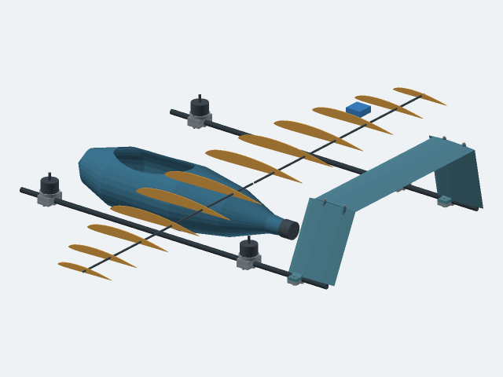
Wing skins hidden for display only. Blue box is a nonphysical MG90S static envelope.
Native CAD previews, rendered clips, engineering views, and timestamped reference links. Silent source media for editing; no usable live UI recording was obtained.
Suggested edit sequence · Actual Astra repair actions · Independent repair check
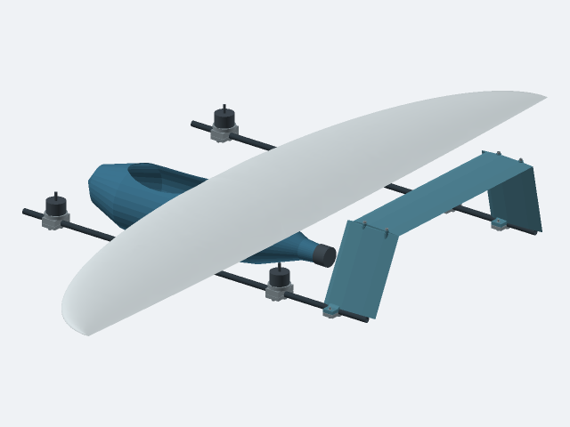
Smooth wing, internal ribs and spar, and corrected rear rotor positions. Native save/reopen passed; 85 physical parts, 3,570 pair checks, no overlaps or missed required contacts.
Three assembly groups still need attachment interfaces. Strength and flight readiness remain unverified. Motor bodies are dimensional envelopes; the supplier CAD examples below are separate. STEP was not checked for this integrated revision.
Wing skins hidden for display only. Blue box is a nonphysical MG90S static envelope.
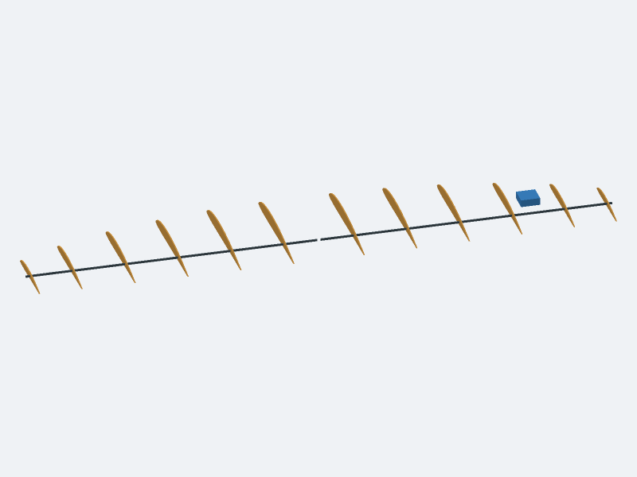
Wing skins hidden for display only. Blue box is a nonphysical MG90S static envelope.
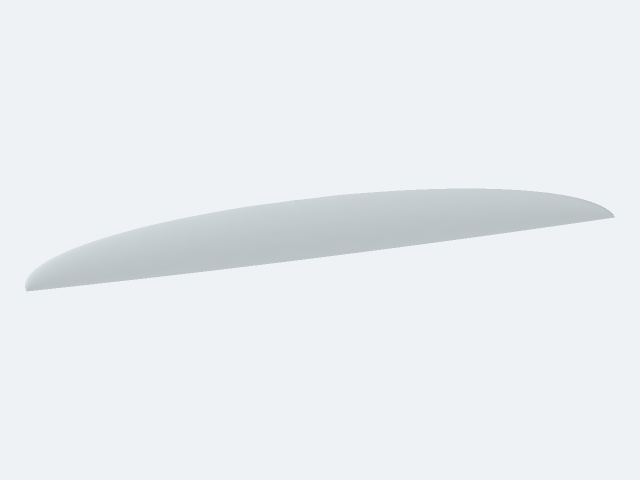
Proposed smooth exterior, one wing half. This earlier candidate failed its internal cavity wall check; the corrected assembly is shown above.
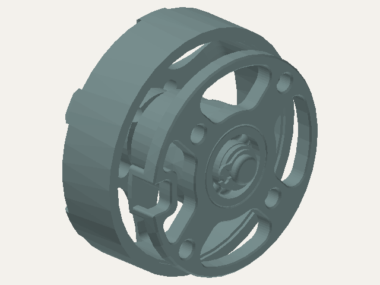
Actual T-MOTOR MN2806 EVO STEP; component-library demonstration, not the reference AOS2807.
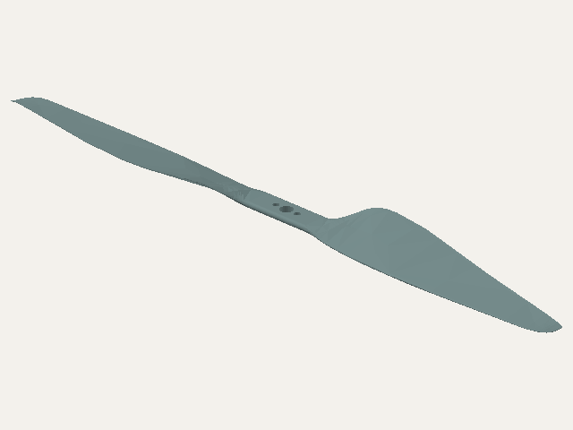
Actual T-MOTOR P12x4 STEP; component-library demonstration, not the reference Gemfan7042.
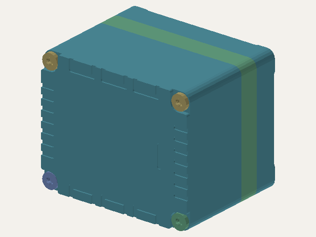
Actual Holybro Pixhawk 6X Pro simplified housed-module CAD. All18solids and13reference surfaces retained.
Not a bare PCB or reference-VTOL Speedybee substitution. Reference surfaces are excluded from mass/collision checks. Native preservation and reopen passed; checked STEP export is unavailable for this mixed model.Native CAD render; proposed reconstruction
Rendered from saved B-reps, not a live UI recording. Full aircraft attachments and structural sizing remain unfinished.Rendered simulation; earlier model
Not the latest Tsung VTOL reconstruction; not filmed fabrication or flight.Rendered simulation; earlier model
Not the latest Tsung VTOL reconstruction; not filmed fabrication or flight.Rendered simulation; earlier model
Not the latest Tsung VTOL reconstruction; not filmed fabrication or flight.Rendered rocket model / fabrication visualization
Not footage of a built or flown rocket; geometry and process visualization only.Rendered rocket model / fabrication visualization
Not footage of a built or flown rocket; geometry and process visualization only.Rendered rocket model / fabrication visualization
Not footage of a built or flown rocket; geometry and process visualization only.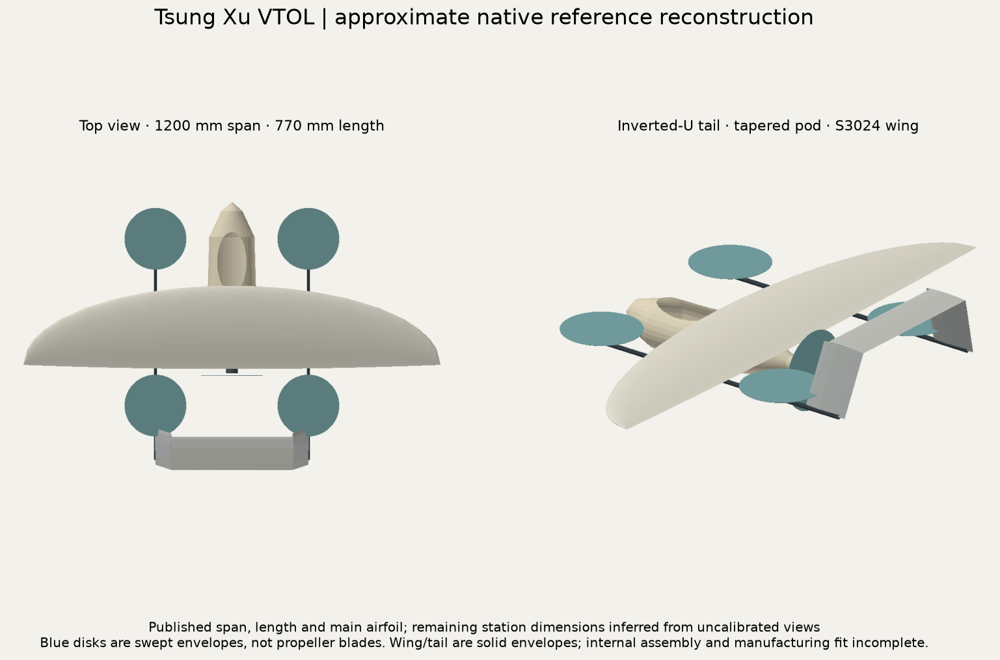
Approximate reference reconstruction
Current CAD progress; capture an orbit or parameter edit from the associated FCStd for motion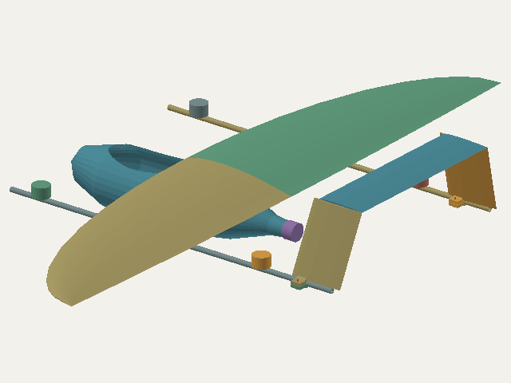
Native CAD; attachment work in progress
Current CAD progress; capture an orbit or parameter edit from the associated FCStd for motion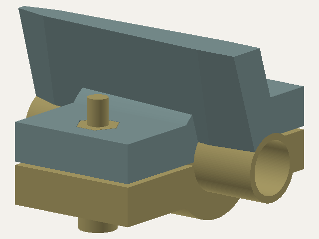
Proposed split clamp, not original author internals
Current CAD progress; capture an orbit or parameter edit from the associated FCStd for motion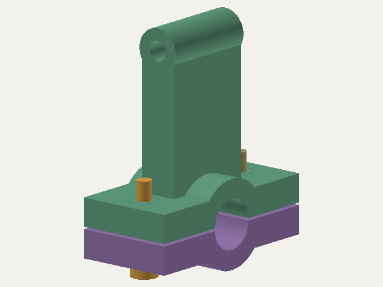
Local attachment geometry; structural sizing unresolved
Current CAD progress; capture an orbit or parameter edit from the associated FCStd for motion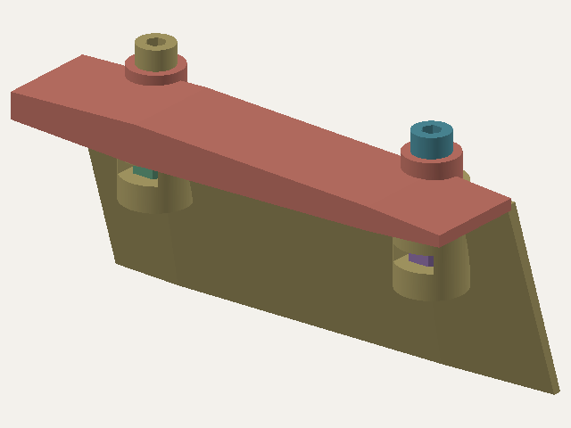
Proposed screw-and-nut retention; full aircraft attachments unfinished.
Actual native CAD cutaway of one side. Strength and preload unverified.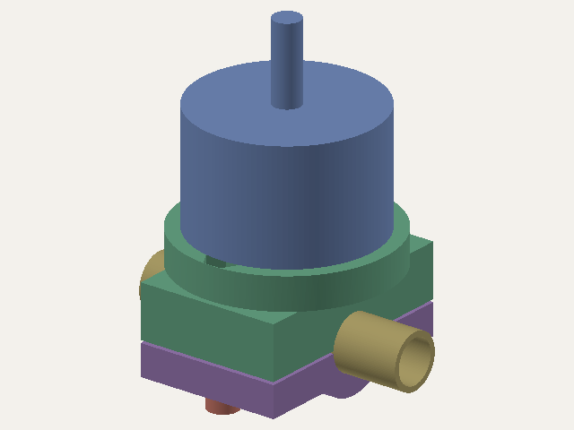
Proposed lift motor clamp and screw access
Earlier revision with rear rotor sweep conflicts; the corrected assembly is shown above.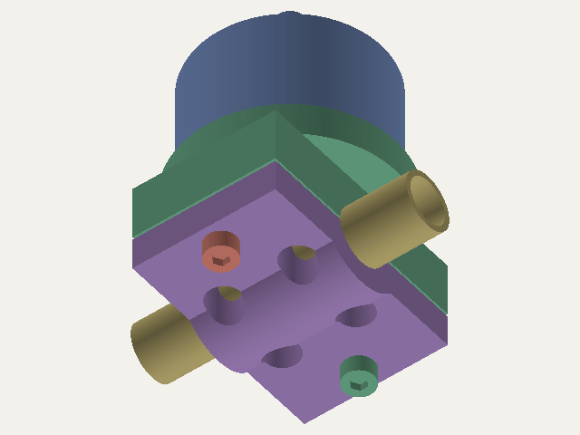
Proposed lift motor clamp and screw access
Earlier revision with rear rotor sweep conflicts; the corrected assembly is shown above.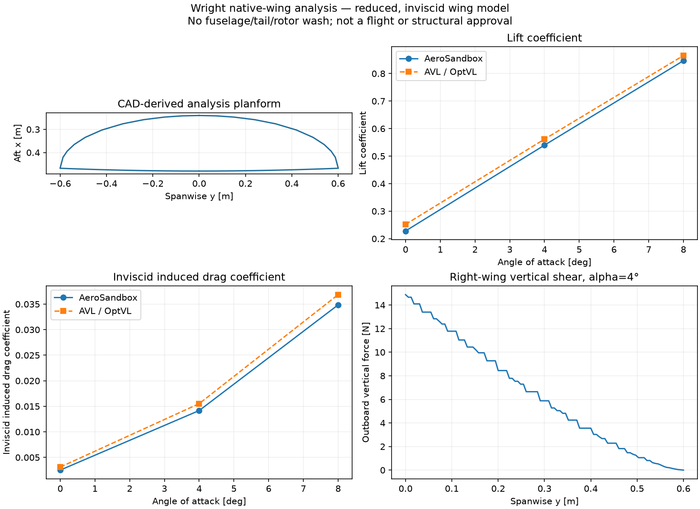
Actual native-wing sections analyzed with AeroSandbox, AVL/OptVL and NeuralFoil. Lift, induced drag and spanwise loads; wing-only reduced model, not flight or structural approval.
Solver report and geometry provenance · Panel loads CSV · Physical-invariant regression checks
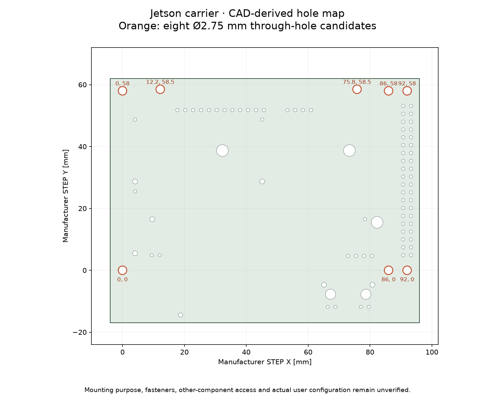
Measured through-hole candidates from the official Jetson CAD. Mounting purpose and installed-component access remain unverified.
Coordinates and source provenance
Native parameter changes: bore radius 5.2 → 5.0 mm; lower halfspace height 12 → 11.5 mm. The local repair passed independent checks. Use the saved action sequence for a clearly labeled replay.
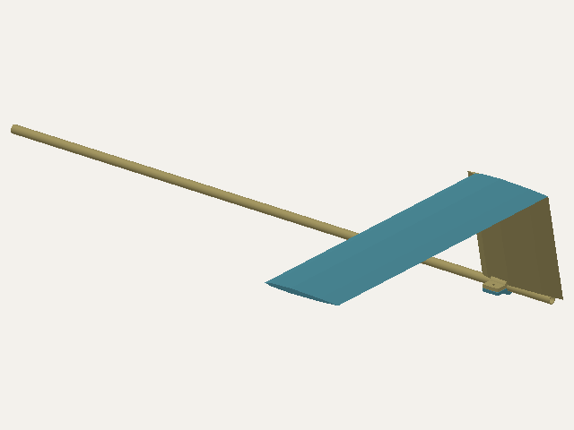
Tsung Xu original VTOL build video — Reference link; no clip download or reuse permission recorded
0:30 — Overall wireframe layout. Introduce the target complexity.
0:32 — Fusion CAD and curved wing planform. Reference-to-reconstruction comparison.
0:42 — Open pod, internal ridge and bench electronics. Explain why internal packaging matters.
Author build article — Source attribution and reference
Author Reddit post and performance caveat — Source attribution; advertised130mi capability is not a completed full-range flight test
Actual Astra repair replay: Capture tool edits and the native result together; label as replay of the recorded run. Not yet recorded.
Coupled bilateral parameter edit: Capture boom spacing220→230→220 with both clamps following. Not yet recorded.
Latest assembly orbit and hardpoint closeup: Native geometry orbit clips now available above. Live UI recording not obtained.